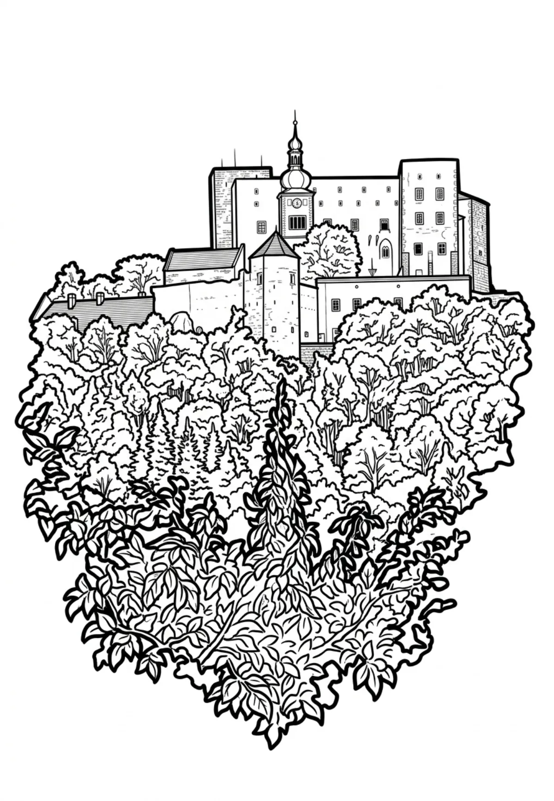

Hrad Buchlov
Buchlov je též historický český název pro město Buchloe v Bavorsku. Buchlov (německy Buchlau) je královský hrad stojící na stejnojmenném kopci v Chřibech nad Buchlovicemi v nadmořské výšce 522 metrů. Doba stavby tohoto hradu se odhaduje na 1. polovinu 13.
Více na Wikipedii